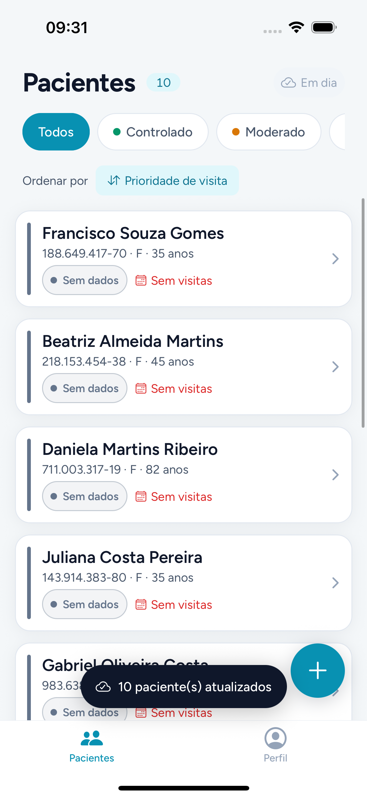
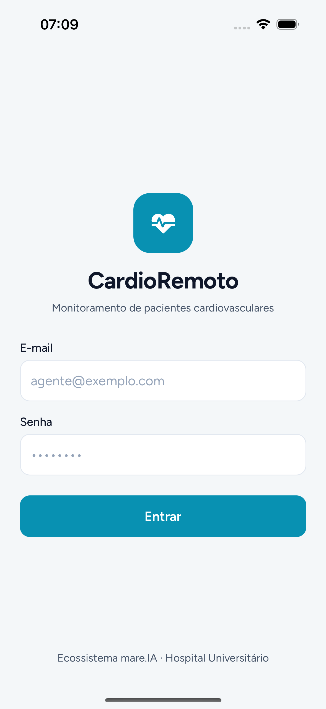
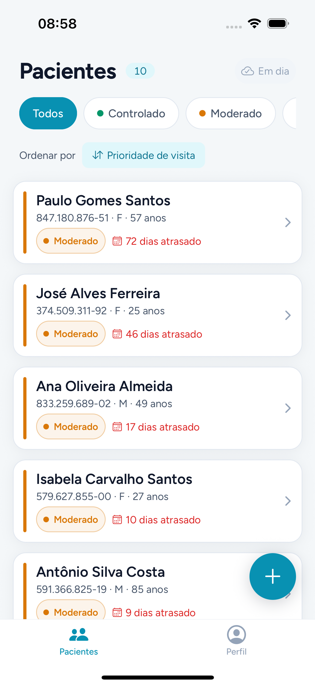
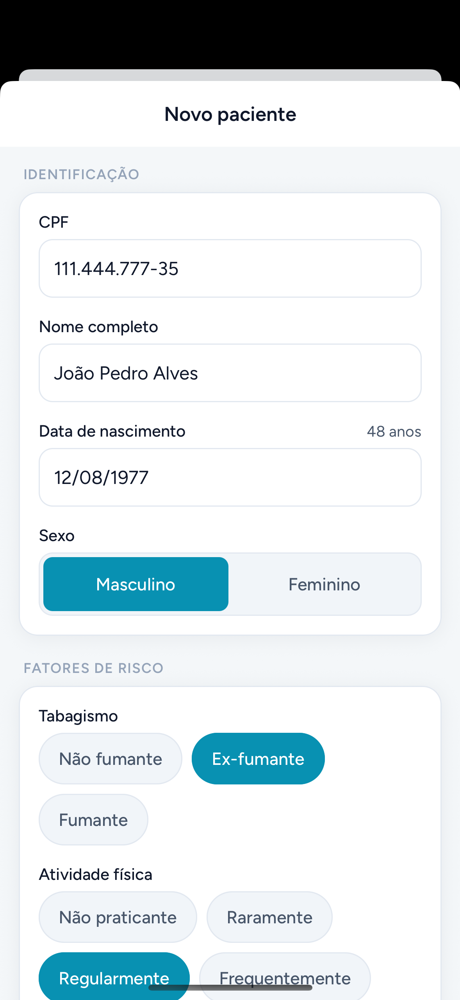
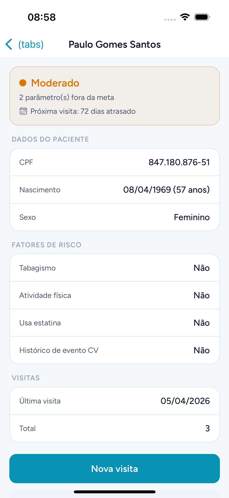
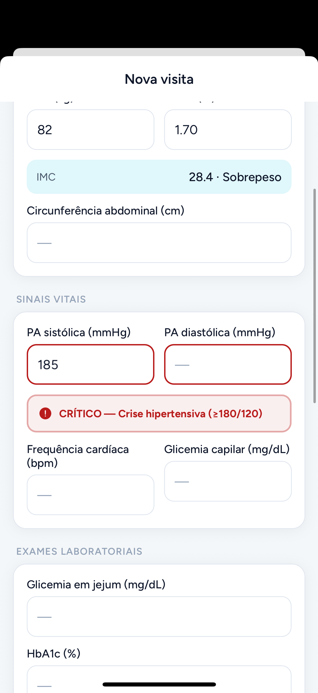
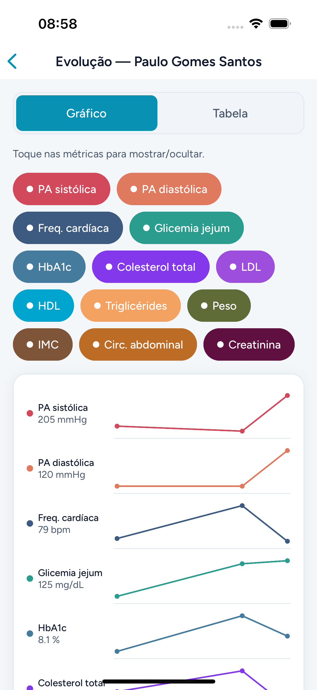
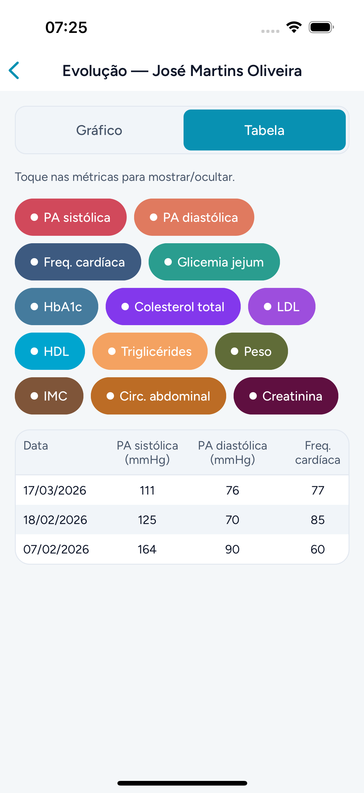
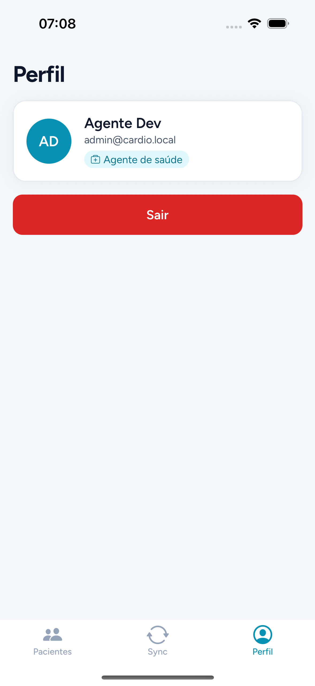

Quem construiu
Tiago Trindade de Oliveira
João Vittor Alves
Leonardo Chianca
Projeto acadêmico da disciplina UCE II — engenharia de requisitos aplicada a um produto de saúde.
Coleta clínica offline-first para agentes de saúde em campo — classificação de risco, prioridade de visita e sincronização automática com o banco central.
Projeto acadêmico da disciplina UCE II — engenharia de requisitos aplicada a um produto de saúde.
O Hospital Universitário acompanha pacientes cardiovasculares por meio de agentes de saúde em campo. Cada visita coleta dados antropométricos, sinais vitais e exames — mas o trabalho acontece onde a conectividade é instável.
Parâmetros na meta, sem evento recente.
1–2 parâmetros fora da meta.
3+ fora da meta ou evento recente.
Sem exames para classificar.
O agente de saúde faz login, vê a lista de pacientes e, para cada um, pode cadastrar, registrar visitas e acompanhar a evolução dos exames. O sistema classifica o risco e ordena por prioridade de visita automaticamente — funcionando offline e sincronizando quando possível.
Acesso do agente com bloqueio após 5 tentativas (UC01).
CPF, nascimento (idade automática), tabagismo, atividade física, estatina e histórico CV.
Todos · Controlado · Moderado · Grave.
Visitas atrasadas primeiro; nunca visitados no topo.
Antropométricos, sinais vitais e exames laboratoriais, com alertas críticos.
Tabela + gráfico temporal (small multiples).
Envio dos dados locais ao banco central (online).
RFN001 · Offline importante RFN002 · Responsiva desejável
Essas regras vivem em um único módulo compartilhado — a mesma lógica roda no app e no backend.
Do panorama à organização do código e às escolhas específicas de cada parte.
React Native (Expo) — um só código que roda em qualquer celular, iOS e Android. Toda a coleta funciona offline, no próprio dispositivo.


Node.js puro (sem dependências externas) expõe o banco central e o contrato de sincronização via HTTP/JSON.

Testes unitários + e2e (Maestro) no simulador, verificados automaticamente por CI (GitHub Actions) a cada PR.
 Maestro
Maestro
packages/shared é a única fonte de verdade: risco, prioridade, alertas e o contrato de sincronização Mobile Backendnode:httpnode:sqlite Compartilhado Qualidadenode:test (unit)O agente trabalha sempre contra o banco local. Quando há rede, o app envia (push) o que mudou e busca (pull) o que chegou — sem nunca bloquear a coleta.
updatedAt (last-write-wins)
O agente abre o app, vê quem precisa de atenção e registra a visita em poucos toques — a complexidade (offline, risco, sincronização) fica escondida.
Login seguro (bloqueio após 5 tentativas). A lista já chega ordenada por prioridade de visita, com o selo de risco de cada paciente e filtros por estado.


Cadastro com CPF validado, idade automática e fatores de risco categóricos (tabagismo, atividade física, histórico CV). O detalhe mostra o risco calculado e a próxima visita.


Antropométricos (IMC automático), sinais vitais e o painel laboratorial completo. Valores críticos acendem alertas imediatos — aqui, crise hipertensiva.

Gráfico small multiples — cada métrica em sua faixa, no mesmo eixo temporal — e a mesma informação em tabela. Toque para mostrar/ocultar métricas.


Sem tela de sincronização para gerenciar: um indicador de status no topo da lista e, no Perfil, o resumo e um botão de "sincronizar agora" para quando o agente quiser forçar.

A base é sólida e funcional (com CI verificando cada mudança). Para produção, cada peça abaixo precisa evoluir.
Hoje: login local. Falta: serviço de auth + perfis.
Hoje: SQLite de prova. Falta: PostgreSQL gerenciado.
Hoje: HTTP mínimo. Falta: API autenticada e validada.
Dados de saúde exigem criptografia e auditoria.
Conectar ao prontuário do HU (FHIR/HL7).
CI já existe; falta CD, publicação e observabilidade.
Login local contra um agente semeado no dispositivo; bloqueio por tentativas já implementado.
Por quê: dados de saúde exigem identidade forte e rastreabilidade de quem coletou o quê.
Banco central em node:sqlite e um servidor node:http mínimo — prova de conceito do contrato de sync.
Por quê: durabilidade, concorrência e escala com muitos agentes e dispositivos.
Rede local permitida, dados em texto no dispositivo. Suficiente para protótipo, insuficiente para dados reais.
Por quê: são dados sensíveis de saúde — a LGPD exige proteção em repouso e em trânsito.
Já temos: CI (GitHub Actions) rodando typecheck, testes e lint a cada PR — a base da automação está pronta.
CardioRemoto — coleta clínica offline-first, do campo ao banco central.
Perguntas?